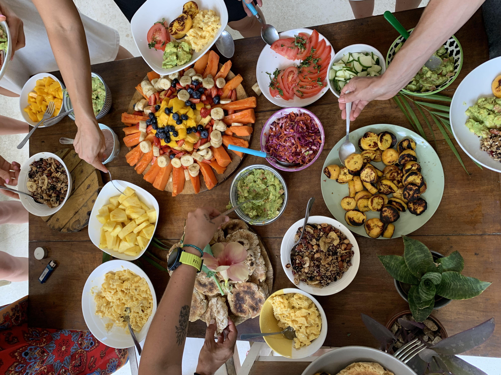

Cada retiro merece una cocina que lo potencie. Pedro diseña menús completos adaptados a la energía, intención y disciplina de cada encuentro — desde el amanecer hasta el cierre ceremonial.
Intención
Cada plato diseñado para sostener la práctica del día
Equilibrio
Doshas y energía en balance a lo largo del día
Agni
Fuego digestivo respetado en cada preparación
Terroir
Ingredientes locales y estacionales, donde sea posible
Vibración
Cocina preparada con amor, presencia y gratitud


Agua Mineral & Arcilla Blanca
Vaso de agua tibia con unas gotas de jugo de limón, una pizca de arcilla blanca comestible y spirulina. Protocolo de limpieza intestinal profunda para el inicio del día.
Jugo Maestro Detox
Pepino, apio, manzana verde, jengibre, limón, cilantro y una hoja de aloe vera. Extracción en frío para máxima biodisponibilidad enzimática. Suministra clorofila en forma directa.
Chia Pudding & Frutas de Bajo IG
Semillas de chía activadas en leche de almendra con vainilla. Coronado con berries, granada y semillas de cáñamo. Sin azúcar añadido. Índice glucémico ultra bajo para estabilizar la energía.
Bowl Raw de Zoodles & Pesto Crudo
Zucchini en espiral, brotes de alfalfa, tomates cherry, aguacate y pesto fresco de albahaca y nueces de macadamia. 100% sin cocción para preservar enzimas y nutrientes.
Caldo Mineral de 12 Horas
Caldo largo de huesos de vegetales (cebolla, zanahoria, apio, perejil, kombu) cocinado 12 horas. Rico en minerales, silicio y glutamina para reparar la mucosa intestinal. Cierre suave del día.
✦ Protocolo de muestra para un día de detox completo. Pedro diseña programas de 3 a 21 días según los objetivos del retiro.
Shot de Wheatgrass & Jengibre
Shot de pasto de trigo recién extraído con jengibre fresco. Concentrado máximo de clorofila, vitamina K y enzimas vivas. Ritual diario de cada mañana.
Limonada con Cayena & Maple
La bebida de limpieza clásica renovada: limón fresco, cayena, sirope de maple puro y agua de manantial. Activa el metabolismo y la circulación linfática.
Açaí Bowl Antioxidante
Puré de açaí salvaje con maqui berry, banana congelada y leche de coco. Topping de goji, cacao crudo, coco rallado y semillas activadas. El desayuno más antioxidante del mundo.

Té de Cacao Ceremonial Suave
Cacao crudo de baja dosis (20g) con leche de avena, miel, canela y una pizca de sal marina. El cacao abre el corazón y eleva la energía sin la disrupción de la cafeína.
Banana & Semillas — Desayuno Mínimo
Banana madura, un puñado de semillas de calabaza activadas y una cucharada de mantequilla de almendra. Simple, liviano, sin elaborar. El cuerpo lo agradece antes de una sesión profunda.
Bowl de Integración — Raíces Asadas
Batatas, remolachas y zanahorias asadas lentamente con ghee, tomillo y sal del Himalaya. Granos integrales. El calor y el peso de las raíces ayudan al sistema nervioso a aterrizar después de la expansión.
Caldo de Miso & Wakame
Caldo de miso blanco con alga wakame, tofu, cebollín y sésamo. Fermentado vivo. Los probióticos del miso calman el sistema digestivo y el mineral del wakame equilibra el sistema nervioso.
Sopa de Avena & Hierbas de Integración
Avena cocinada con caldo de verduras, tomillo, sage, laurel y aceite de oliva. Con pan de masa madre. Cena sencilla y amorosa que cierra el ciclo del día con calidez y simplicidad.
✦ Menú diseñado especialmente para sostener procesos transpersonales. Pedro coordina los horarios de comida con los facilitadores del retiro.
Cacao Ceremonial Completo
Para ceremonias de mayor profundidad, Pedro prepara cacao ceremonial de origen (Guatemala o Perú) en dosis completa con rezos, intención y especias sagradas.
Papas Rellenas al Fuego
Papas enteras cocinadas sobre brasas, rellenas de puré de aguacate, cebollín y sal ahumada. El alimento más ancestral y grounding para noches de integración.
Congee de Arroz Medicinal
Arroz blanco cocinado 2 horas hasta formar una sopa espesa. Con jengibre, miso y algas. Alimento de máxima digestibilidad y profundo descanso celular.

Caldo Purificador de 7 Plantas
Caldo medicinal con ortiga, diente de león, bardana, romero, salvia, tomillo y perejil. Sin sal, sin aceite. Purifica el hígado y los riñones para potenciar la apertura de la noche ceremonial.
Arroz Blanco & Verduras al Vapor
La comida más pura: arroz blanco de grano largo sin condimentar, verduras verdes al vapor (brócoli, espinaca, zapallito). Con mínima sal marina. Máxima simpleza para honrar el espacio ceremonial.
Sopa de Integración & Fruta Dulce
Sopa liviana con fideos de arroz, zanahorias, apio y hierbas suaves. Frutas dulces y maduras: mango, papaya, sandía. El dulce ayuda a integrar y cerrar suavemente la energía de la noche.
Kichari Blanco de Retorno
Kichari preparado sin especias picantes: arroz, mung, comino suave, cúrcuma y ghee. El alimento más fácil de digerir que existe. Permite al sistema digestivo descansar mientras el ser procesa la experiencia.
Banquete de Gratitud
Al finalizar el período de dieta, mesa comunitaria abundante con los sabores de la tierra: sopas ricas, panes artesanales, ensaladas vivas, postres de fruta. Celebración del retorno al mundo ordinario con gratitud.
✦ Pedro trabaja en estrecha colaboración con el facilitador/curandero para respetar las restricciones de cada tradición. El menú se adapta completamente al protocolo de la medicina.

Bienvenida — Kefir de Coco & Canapes Vivos
Kefir artesanal de leche de coco con frutos rojos. Tabla de canapés crudos: crackers de semillas, hummus de remolacha, tartare de aguacate, láminas de nabo marinado y flores comestibles.
Sopa de Miso Negro con Oro Comestible
Miso de cebada envejecido 2 años, dashi de kombu, nameko, tofu sedoso y cebollino. Terminada con aceite de sésamo negro y láminas de oro comestible. Profundidad umami con elegancia minimalista.
Risotto de Quinoa Negra & Trufa
Quinoa negra cocinada al estilo risotto con vino blanco, caldo de hongos shiitake, mantequilla de caju y láminas de trufa negra fresca. Terminado con aceite de trufa y parmesano de macadamia.
Sorbet de Yuzu & Cardamomo
Sorbet de yuzu japonés, cardamomo verde y jengibre fresco. Sirve como palate cleanser entre el plato principal y el postre. Presentado en cáscara de limón con polvo de matcha y menta fresca.
Tarta de Cacao Crudo & Sal de Mar
Base de dátiles y nueces. Ganache de cacao crudo peruano 100%, crema de coco y vainilla. Terminada con sal de Fleur de Sel y micro hierbas. Servida a temperatura ambiente para máxima expresión del cacao.
✦ Menú de alta cocina para cenas privadas de 6 a 20 personas. Pedro cotiza por persona según la complejidad del menú, el número de comensales y la ubicación del evento.
Mise en Place Ceremonial
Pedro no solo cocina: diseña la experiencia completa. Mesa, flores, vajilla, música y ambiente. Cada detalle al servicio de la memoria que se quiere crear.
Maridaje de Infusiones
En lugar de vinos, Pedro diseña una carta de infusiones medicinales maridadas con cada plato. Kombucha artesanal, kefir de agua, aguas de flores y tónicos de adaptógenos.
Taller de Cocina Privado
La cena puede incorporar un taller participativo: los invitados aprenden a preparar uno o dos platos del menú junto a Pedro. Una experiencia transformadora que va más allá de comer.

Pipas
Recepción con pipas de coco frescas. El primer alimento del retiro, directo de la naturaleza: hidratante, nutritivo y ceremonial.
Kichari
Arroz basmati, lentejas coral, zanahoria, calabaza y boniato. El plato insignia del Ayurveda: nutritivo, fácil de digerir y equilibrador de los tres doshas.
Trufas · Infusión digestiva
Trufas de cacao crudo. Infusión digestiva de hierbas para cerrar la primera noche y favorecer el descanso profundo.
✦ Menú real ejecutado por Pedro Miguel en Costa Rica, julio 2025. Cada día adaptado al ritmo, la energía y las necesidades del grupo Swarupa CR.
Por qué elegir a Pedro
La diferencia entre un chef y un cocinero holístico es la consciencia con que se cocina. Pedro no solo domina la técnica — lleva a la cocina su formación en Ayurveda, su práctica de yoga, su experiencia con el Breathwork y su profunda conexión con la naturaleza. Cada menú es una extensión del mismo trabajo de transformación que sucede en el tapete de práctica.
Años de cocina holística y retiros
Disciplinas integradas en cada menú
Personalizado para cada retiro
Disponible en todo el mundo